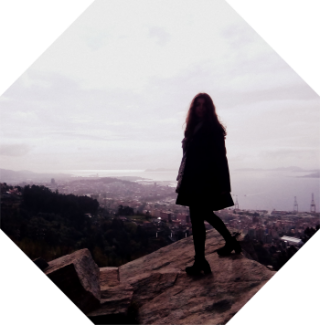

PORTFOLIO

My name is Sonsoles López Pernas I was born in Vigo, Spain in 1994. I am currently on my last year of a Telecommunications Engineering Degree at Madrid Technical University.
I am interested in Web Development and Software Design in general. Specifically, I enjoy developing physics and telecommunications oriented tools.
I also like playing classical guitar, reading, travelling, and listening to 80s rock songs.
